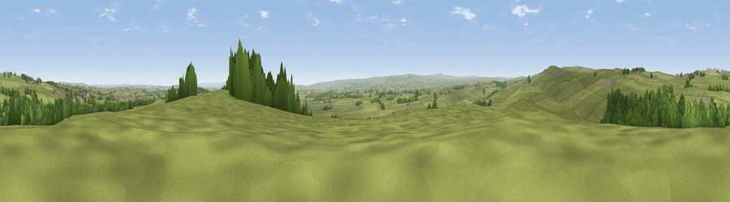

Cragg Top
#12497 in England · top 25% of its area beats it · near CopleyThe view, rendered

A 360° render of this exact spot computed from the terrain model, tree cover and land cover — summer colours, afternoon light, calibrated against photographs of famous viewpoints. Real trees, hedges and buildings will differ in detail.
The panorama
Grey silhouette: terrain skyline in each direction (720 bearings, Earth curvature and refraction included). Dashed green: skyline with trees (+15 m) and buildings (+8 m) as obstacles. Blue strip: how far the ground is visible on each bearing.
Where the view opens
Wedge length = distance to the farthest visible ground on that bearing (vegetation-aware). Rings at 10, 25 and 50 km.
What fills the view
83% grassland · 11% woodland · 5% cropland · 1% built-up
Angular shares of the visible panorama (visual magnitude), not map area. Landscape diversity 0.26 (0–1 Shannon).
Key numbers
More beautiful places nearby
The staircase of upgrades: each row has a higher view potential than everything closer. Driving times are estimates from straight-line distance, calibrated against real road routing — check an actual route before setting out.
| Place | Direction | Drive | Score |
|---|---|---|---|
| Viewpoint near Woodland | NW · 2 km | ~6 min | 62.8 |
| Viewpoint near Eggleston | W · 4 km | ~10 min | 69.7 |
| Viewpoint near Eggleston | W · 6 km | ~13 min | 76.0 |
| Pontop Pike | NNE · 30 km | ~47 min | 77.8 |
| Little Dun Fell | WNW · 38 km | ~57 min | 78.4 |
| Cross Fell | WNW · 40 km | ~59 min | 78.7 |
| Viewpoint near Ingleby Cross | ESE · 45 km | ~66 min | 82.4 |
| Beacon Hill | ESE · 45 km | ~66 min | 84.7 |
54.61102, -1.88719 · source: dobih hill · position refined by local search. Computed location — check access rights before visiting.